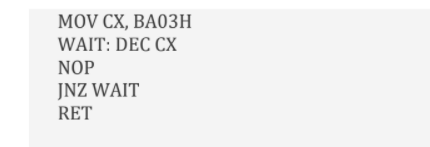

1. How many bytes of bit addressable memory is present in 8051 based microcontrollers? a. 8 bytes b. 32 bytes c. 16 bytes d. 128 bytes
2. In ARM, How many general-purpose registers are available in user mode? a. 16 b. 32 c. 64 d. 8
3. In a common anode seven segment displays, to illuminates particular segment one must apply ______. a. Logic 0 at the cathode terminal of that particular segment b. Logic 1 at the cathode terminal of that particular segment c. Logic 1 at the anode terminal of that particular segment d. Logic 0 at the anode terminal of that particular segment
4. Which register in 8051 holds the RI and TI flags? a. TCON b. SCON c. TMOD d. PCON
5. What is the Address (SFR) for TCON, SCON, SBUF, PCON and PSW respectively? a. 88H,98H,99H,87H,0D0H b. 98H,99H,87H,88H,0D0H c. 0D0H,87H,88H,99H,98H d. 87H,88H,0D0H,98H,99H
6. What is the content of accumulator after the following instruction are executed? MOV A,#0 MOV R2,#10 AGAIN: ADD A,#03 DJNZ R2,AGAIN MOV R5,A a. A = 1Eh b. A = 1Dh c. A = 1Ch d. A = 1Bh
7. Which of the following statement is FALSE? a. ARM instruction set have PUSH/POP instructions b. Register R15 is the program counter c. Register R13 is conventionally used as stack pointer d. Register R14 is called the link register
8. Which of the following combination is best choice for achieving power efficiency and low cost in ARM microcontrollers? a. 32-bit memory and ARM instruction set b. 16-bit memory and ARM instruction set c. 16-bit memory and THUMB code d. None of the above
9. Identify the contents of control word of the 8255 for the following configuration. Port A, port B, PCL and PCH acts as input mode. (Assume mode 0, I/O mode) a. 80h b. 90h c. 89h d. 9Bh
10. The Cortex-M3 processor, based on the _____________ architecture. a. ARMv7-A b. ARMv7-R c. ARMv7-M d. ARMv7-C
11. The instruction, ADD A, #100 performs a. 100(decimal) is added to contents of address register b. 100(decimal) is subtracted from the accumulator c. 100(decimal) is added to contents of an accumulator d. None of the above
12. What is the size of internal bus of the 8255 PPI? a. 4 bits b. 8 bits c. 16 bits d. 32 bits
13. In the instruction set,
a. 2 clock cycles b. 8 clock cycles c. 16 clock cycles d. 64 clock cycles
14. What kind of instructions usually affect the program counter? a. Call & Jump b. Call & Return c. Push & Pop d. Return & Jump
15. What is the maximum speed of operating frequency exhibited by SPI as compared to that of TWI? a. Less than 10 MHz b. Greater than 10 MHz c. Equal to 10 MHz d. None of the above
16. Which flags represent the least significant bit (LSB) and most significant bit (MSB) of Program Status Word (PSW) respectively? a. Parity Flag & Carry Flag b. Parity Flag & Auxiliary Carry Flag c. Carry Flag & Overflow Flag d. Carry Flag & Auxiliary Carry Flag
17. PIC18F series microcontrollers has _______________. a. 12-bit address bus for program memory b. 21-bit address bus for data memory c. 21-bit address bus for program memory d. 16-bit address bus for program memory
18. The main importance of ARM micro-processors is providing operation with ______ a. Low cost and low power consumption b. Higher degree of multi-tasking c. Lower error or glitches d. Efficient memory management
19. Which of the following feature is present in AT90S2313 microcontroller? a. 32 bytes of EEPROM b. 128 bytes of SRAM c. 256 bytes of SRAM d. 8k bytes of flash memory
20. Determine the contents of accumulator at the end of the following program? a. 6Ah b. 70 c. 60h d. 80
21. Which of the following is not an addressing mode of 8051? a. Register Instructions b. Register Specific instructions c. Indexed Addressing d. None of the above
22. Which register bank is supposed to get selected if the values of register bank select bits RS1 & Rs0 are detected to be ‘1’ & ‘0’ respectively? a. Bank 0 b. Bank 1 c. Bank 2 d. Bank 3
23. The address system supported by ARM systems is/are ___________. a. Little Endian b. Big Endian c. X-Little Endian d. Both Little & Big Endian
24. What is the difference between the 8031 and the 8051? a. The 8031 has no interrupts. b. The 8031 is ROM-less. c. The 8051 is ROM-less. d. The 8051 has 64 bytes more memory.
25. An alternate function of port pin P3.1 in the 8051 is: a. Memory write strobe b. Memory read strobe c. Serial Port Input d. Serial Port Output
26. How many possible systems calls present in ARM processor? a. 2^8 b. 2^12 c. 2^16 d. 2^24
27. DAA command adds 6 to the nibble if? a. CY and AC are necessarily 1 b. either CY or AC is 1 c. no relation with CY or AC d. CY is 1
28. Why common anode 7-seg displays are more popular than common cathode 7-seg displays? a. Logic circuits can sink more current than they can source b. Logic circuits can source more current than they can sink c. Common anode displays are cheaper compared to its counterparts d. Common anode displays consume less area compared to their counterparts
29. What is the ROM size of ATTint11 microcontroller? a. 1k flash memory b. 2k flash memory c. 4k flash memory d. 8k flash memory
30. Which of the following architecture is used in AVR Microcontrollers? a. von Neumann architecture b. Harvard architecture c. MIT architecture d. Berkeley architecture